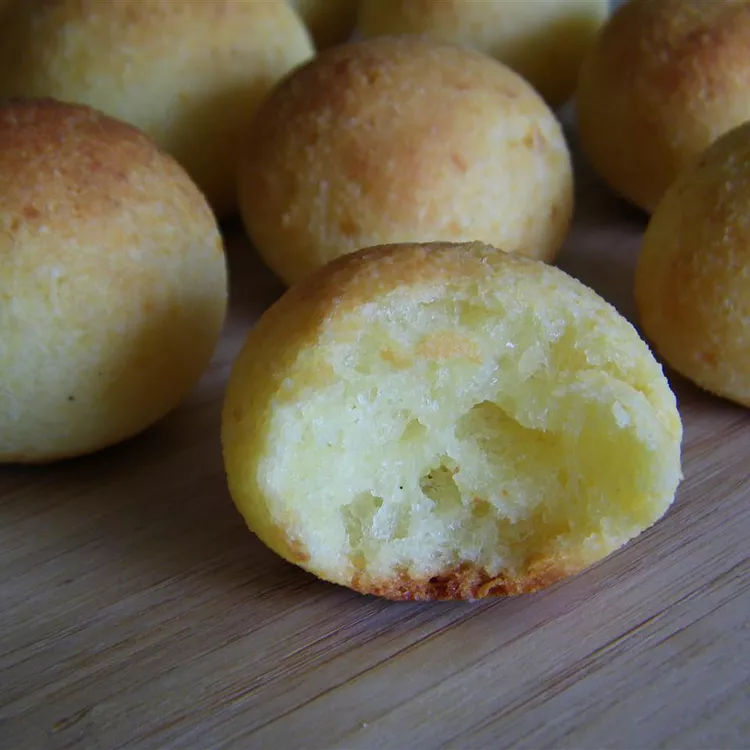

Brazilian Cheese Bread (Pao de Queijo)
Pao de queijo are yummy gluten-free, wheat-free breads that are good for those with celiac disease or gluten intolerance. Serve them plain or with marinara sauce. For more variety, try adding an herb seasonings, such as Italian seasoning, or try substituting other cheeses for the Parmesan.
-
Prep Time:
10 mins -
Total Time:
40 mins -
Yield:
6 -
Cook Time:
20 mins -
Servings:
6
Ingredients
- 1/2 cup olive oil or butter
- 1/3 cup water
- 1/3 cup milk or soy milk
- 1 teaspoon salt
- 2 cups tapioca flour
- 2 teaspoons minced garlic
- 2/3 cup freshly grated Parmesan cheese
- 2 beaten eggs
Directions
Step 1
Preheat the oven to 375 degrees F (190 degrees C).
Step 2
Combine olive oil, water, milk, and salt in a large saucepan and place over high heat. Bring to a boil and immediately remove from the heat..
Step 3
Stir in tapioca flour and garlic, stirring until smooth. Set aside to rest for 10 to 15 minutes.
Step 4
Stir cheese and eggs into tapioca mixture until combined; the dough will be chunky, like cottage cheese.
Step 5
Drop dough by 1/4 cup-size balls onto an ungreased baking sheet.
Step 6
Bake in the preheated oven until the tops are lightly browned, 15 to 20 minutes.